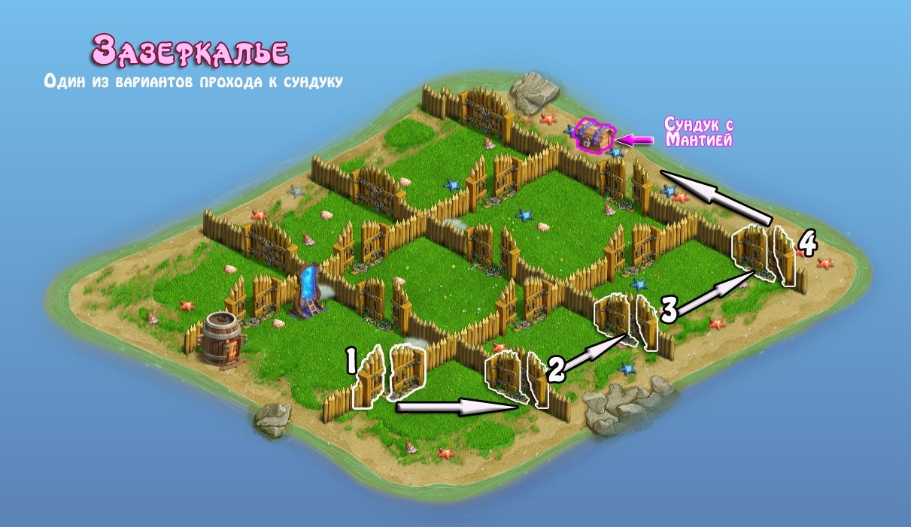
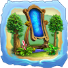

Получено: файл; исходный URL. Первое из двух фото Зазеркалья, подписанных в статье. Копия с moy.su по пути файла zombicity.info; побайтовое совпадение между хостами не проверено. Страница: источник.
Зазеркалье
историческая браузерная версия; платформа и редакция не уточнены- Тип
- Локация по каталогу ЗомбиСити
- Версия и дата
- историческая браузерная версия; платформа и редакция не уточнены
Дополнительные изображения

Данные по источнику · браузерная «Зомби Ферма» / «Зомби Мания»; платформа не уточнена · снимок каталога 10.12.2019; дата редакции неизвестна
Предварительно: Фанатский каталог; возможны общие картинки для разных локаций и зависимость от других источников.. Требуется сверка.
- Каталог
- В разделе «Новые Острова в игре» указана локация «Зазеркалье».
- Оговорка
- Каталог показывает название, картинку и ссылку; отдельная статья по этой ссылке не прочитана в рамках этого импорта. Условия доступа и версии требуют проверки.
- Сравнение снимков
- Эта же подпись, раздел и адрес картинки присутствуют в снимке того же каталога 14.09.2018; это не независимое подтверждение.
Данные по источнику · историческая браузерная «Зомби Ферма» / «Зомби Мания» · 06.07.2018 — дата в URL; дата редакции неизвестна
Предварительно: Фанатская страница, правила исторические, возможны отличия по платформе и версии; общность с ЗомбиСити не позволяет считать источники независимыми.. Требуется сверка.


Связанные сущности
нет проверенных связей — требуется сверка.